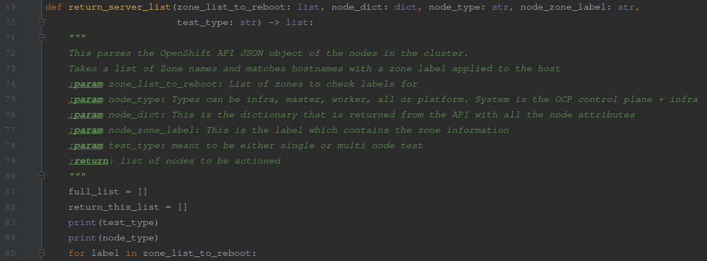
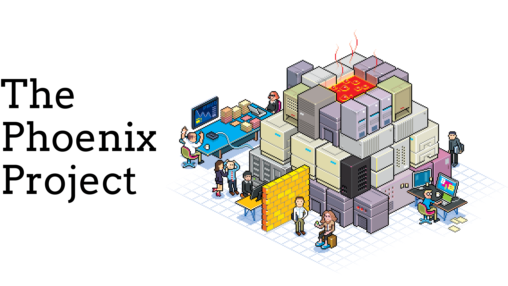
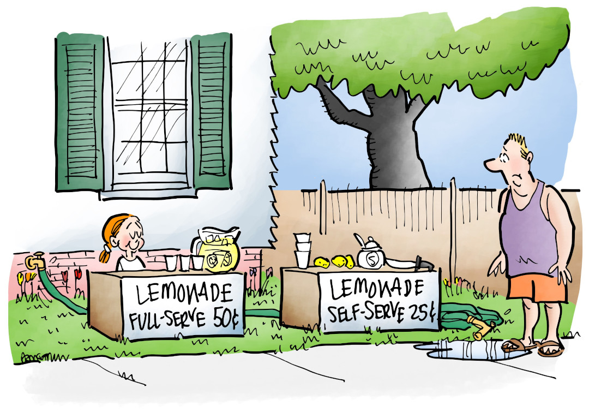
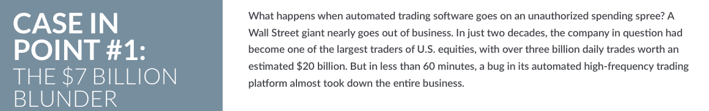
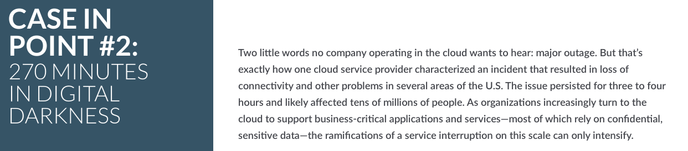

Reduce Not Eliminate
Updating automations, squashing bugs, fielding tickets, creating or updating runbooks/documentation and similar activities will never completely disappear
You can't ever eliminate toil, but you can reduce it to healthy levels
If your toil goes above a certain threshold (say 65%) toil piles up
Bigger orgs try for 33% toil... but 50% may be more manageable
Scripting Is Only Part Of The Battle

Scripting is a step in the right direction
Might have to do fail overs, patching or other complicated tasks
Having to launch a script is still a form of toil
Maintaining code is also toil, as is Maintaining the documentation/comments
Toil cannot be completely eliminated
Technical debt is a problem ... but there are easier wins
Identifying the human side of toil can go a long way to freeing up people
excessive tickets, "pager" events, or walkups which constantly disrupt workflow
This type of toil is really really hard to track
Have one or two people dedicated to handling interrupts or OnCall activities
tickets, meetings, walkups etc

Phoenix project is about a company looking to modernize and launch a new platform
They have all kinds of legacy problems to overcome
Brent is a star employee... maybe even a hero
He is well meaning and cares about his work
He ends up getting involved in all the things because of his skill and knowledge
Even though there are other team members, Brent is called in to solve tough problems
Both inside and outside his department regardless of his assigned tasks
There is an example of logs filling up a disk
instead of cleaning the logs it is better identify the problem
After finding the problem submit a patch so the problem goes away
Automation can and WILL mask problems
it can cause other department to push toil onto your group since your group is always finding workarounds for "grunge" work
Self Service & Proper Access

Another good way to reduce toil is providing proper access
Self service options can take time to develop but increase satisfaction and accountability in the long run
Most people prefer not having to go through a 3rd party for access
Avoid Automation Pitfalls!
Skills and knowledge rust
Persons who are responsible for building automation may move on
Documentation and practice with the automation is forgotten and/or out dated
Automations can only react to known situations, often in flawed ways


Case 1 involved the company (Knight Capitl Group in 2012) dealing with an automation glitch. This huge company was responsible for nearly 11% of all trading in American stocks. The problem came when they had to sell the positions they accidently bought, for a loss of $440m. They lost $10 million/minute
Case 2 is sadly not that uncommon as Amazon, Microsoft and Google have all suffered major outtages in their cloud platform over the last few years
Have an environment where there is limited or no automation
You could also disable or avoid using automation for short periods during a shift or during a rotation
Slow down the rate of testing in a lesser environment to allow for all parties to build on practical knowledge
Go through audits of the automation system to see if there is a way to simplify them